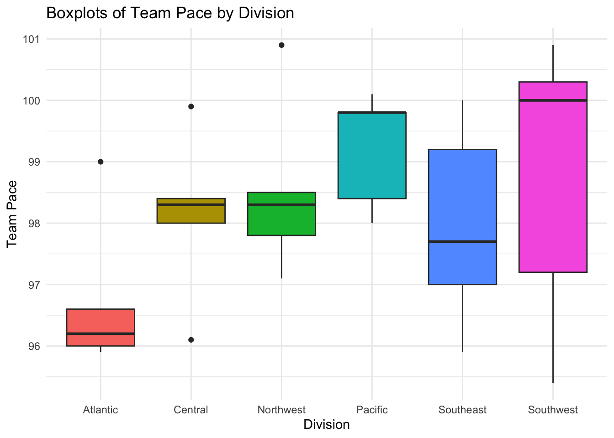
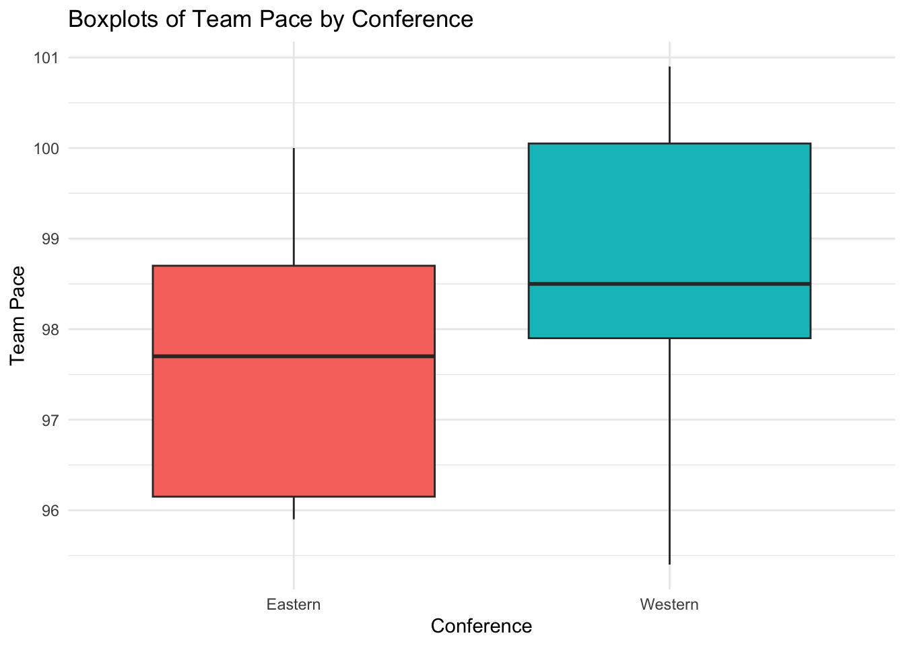
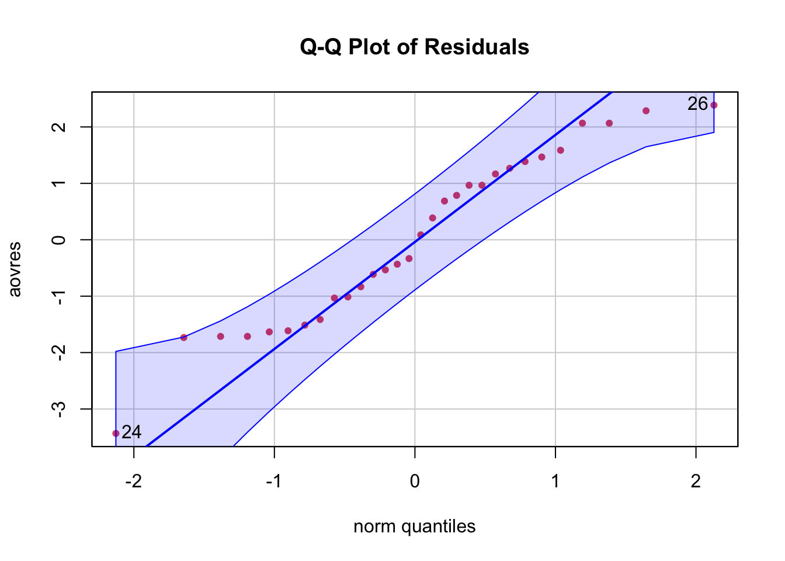

Q4. Open question. Not graded for credit. Choose an application domain that interests you. Find/download an interesting data set in this domain which lends to analysis using one-factor or two-factor ANOVA analysis. Carry out a comprehensive analysis (testing assumptions, testing a suitable hypothesis, estimating effects etc.). Summarize as a report. You can share this on Discussion Board, and include on your Github page.
library(dplyr)
Attaching package: 'dplyr'
The following objects are masked from 'package:stats':
filter, lag
The following objects are masked from 'package:base':
intersect, setdiff, setequal, union
── Conflicts ────────────────────────────────────────── tidyverse_conflicts() ──
✖ dplyr::filter() masks stats::filter()
✖ dplyr::lag() masks stats::lag()
ℹ Use the conflicted package (<http://conflicted.r-lib.org/>) to force all conflicts to become errors
library(car)
Loading required package: carData
Attaching package: 'car'
The following object is masked from 'package:purrr':
some
The following object is masked from 'package:dplyr':
recode
# Load the modified dataset with the 'Division' columndata <-read.csv("/Users/giovanni-lunetta/uconn_masters/stat5405/hw_4/merged_with_mapped_salaries_and_conference_df.csv")
Null Hypothesis: The mean team pace is the same for all divisions.
where \(\mu_i\) is the mean team pace for division \(i\).
Alternative Hypothesis: The mean team pace is different for at least one division.
\(H_a\): \(\mu_i \neq \mu_j\) for at least one pair of divisions \(i\) and \(j\).
Assumptions (WILL BE VALIDATED AFTER RUNNING ANOVA MODEL):
Normality:
We assume that the team pace for each division is normally distributed.
Independence:
We assume that the team pace for each division is independent of the team pace for the other divisions.
Equal Variance:
# Create boxplots by division using ggplotggplot(data, aes(x=as.factor(Division), y=Team_Pace, fill=as.factor(Division))) +geom_boxplot(show.legend =FALSE) +labs(x="Division", y="Team Pace") +theme_minimal() +ggtitle("Boxplots of Team Pace by Division")

We assume that the variance of the team pace for each division is equal.
# Convert Division and Conference to factorsdata$Division <-as.factor(data$Division)data$Conference <-as.factor(data$Conference)
# Run one-way ANOVAanova_result <-aov(Team_Pace ~ Division, data = data)# View the summary of the ANOVA resultsummary(anova_result)
Df Sum Sq Mean Sq F value Pr(>F)
Division 5 18.23 3.646 1.482 0.233
Residuals 24 59.04 2.460
Interpretation:
The p-value is the probability that you obtain the observed results, or more extreme, given that the null hypothesis is true. A smaller p-value (< 0.05) usually indicates that you can reject the null hypothesis.
In this case, the p-value obtained from the one-way ANOVA is 0.233. Since this value is greater than the common alpha level of 0.05, we fail to reject the null hypothesis.
Conclusion:
Based on our analysis, there is not sufficient evidence to conclude that there is a significant difference in the mean team pace among the different divisions, at the 0.05 significance level. In other words, we do not have enough statistical evidence to say that the mean team pace is different for at least one division.
Further Remarks:
Even though there isn’t a significant difference in the mean team pace among the divisions, it could be insightful to explore other factors or variables that might affect team pace. Additionally, exploring the interactions between different variables might reveal significant effects that are not apparent when considering each variable separately.
Validating Assumptions:
Since the p-value is not less than 0.05, strictly speaking, there is no need to check the assumptions of normality and equal variance (homogeneity of variance), as we do not proceed with post hoc tests when you fail to reject the null hypothesis in ANOVA.
Next Steps:
What if there is a difference in pace between conferences (Eastern and Western)?
Null Hypothesis: The mean team pace is the same for both conferences.
\(H_0\): \(\mu_{Eastern} = \mu_{Western}\)
where \(\mu_{Eastern}\) is the mean team pace for the Eastern conference and \(\mu_{Western}\) is the mean team pace for the Western conference.
Alternative Hypothesis: The mean team pace is different for the two conferences.
\(H_a\): \(\mu_{Eastern} \neq \mu_{Western}\)
Assumptions (WILL BE VALIDATED AFTER RUNNING ANOVA MODEL):
Normality:
We assume that the team pace for each conference is normally distributed.
Independence:
We assume that the team pace for each conference is independent of the team pace for the other conference.
Equal Variance:
# Create boxplots by conference using ggplotggplot(data, aes(x=as.factor(Conference), y=Team_Pace, fill=as.factor(Conference))) +geom_boxplot(show.legend =FALSE) +labs(x="Conference", y="Team Pace") +theme_minimal() +ggtitle("Boxplots of Team Pace by Conference")

We assume that the variance of the team pace for each conference is equal.
# Run one-way ANOVA for Conferenceanova_result_conference <-aov(Team_Pace ~ Conference, data = data)# View the summary of the ANOVA resultsummary(anova_result_conference)
Df Sum Sq Mean Sq F value Pr(>F)
Conference 1 11.16 11.163 4.728 0.0383 *
Residuals 28 66.11 2.361
---
Signif. codes: 0 '***' 0.001 '**' 0.01 '*' 0.05 '.' 0.1 ' ' 1
Interpretation:
The p-value is the probability that you obtain the observed results, or more extreme, given that the null hypothesis is true. A smaller p-value (< 0.05) usually indicates that you can reject the null hypothesis.
In this case, the p-value obtained from the one-way ANOVA is 0.0383. Since this value is less than the common alpha level of 0.05, we reject the null hypothesis.
Conclusion:
Based on our analysis, there is sufficient evidence to conclude that there is a significant difference in the mean team pace between the two conferences, at the 0.05 significance level. In other words, we have enough statistical evidence to say that the mean team pace is different between the conferences.
Validating Assumptions:
Normality:
Null Hypothesis: The residuals \(e_{ij}\) are normally distributed.
\(H_0\): \(e_{ij} \sim N(0, \sigma^2)\)
where \(e_{ij}\) is the residual for the \(j\)th observation in the \(i\)th conference.
Alternative Hypothesis: The residuals \(e_{ij}\) are not normally distributed.
\(H_a\): \(e_{ij} \nsim N(0, \sigma^2)\)
aovfits <-fitted(anova_result_conference)aovres <-residuals(anova_result_conference)car::qqPlot(aovres, main ="Q-Q Plot of Residuals", pch =19, col =2, cex =0.7)

[1] 24 26
shapiro.test(aovres)
Shapiro-Wilk normality test
data: aovres
W = 0.95089, p-value = 0.1786
The \(p\)-value of 0.1786 from the Shapiro-Wilk significance test for normality of \(e_{ij}\) validates the normality assumption.
Equal Variance:
Null Hypothesis: The variance of the team pace for each conference is equal.
where \(\sigma_{Eastern}^2\) is the variance of the team pace for the Eastern conference and \(\sigma_{Western}^2\) is the variance of the team pace for the Western conference.
Alternative Hypothesis: The variance of the team pace for each conference is not equal.
Modified robust Brown-Forsythe Levene-type test based on the absolute
deviations from the median
data: data$Team_Pace
Test Statistic = 0.012993, p-value = 0.9101
The \(p\)-value of 0.9101 from the Levene significance test for equal variance validates the equal variance assumption.
Overall Conclusion:
Based on our analysis, there is sufficient evidence to conclude that there is a significant difference in the mean team pace between the two conferences, at the 0.05 significance level. In other words, we have enough statistical evidence to say that the mean team pace is different between the conferences.